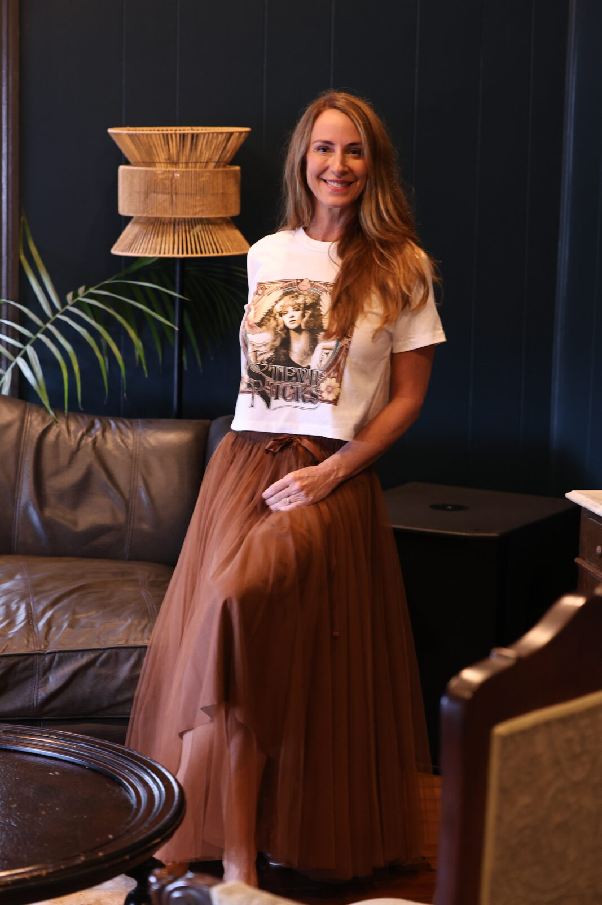
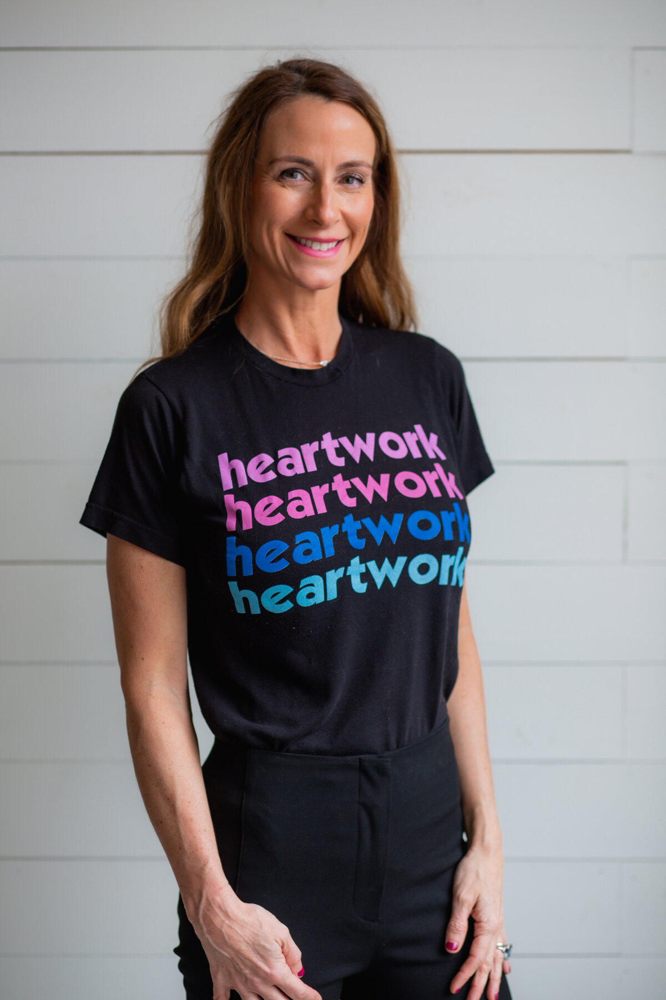
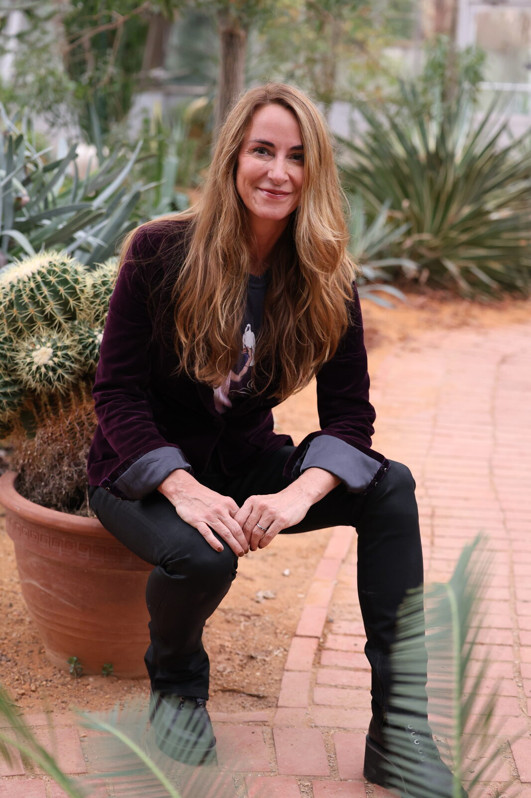
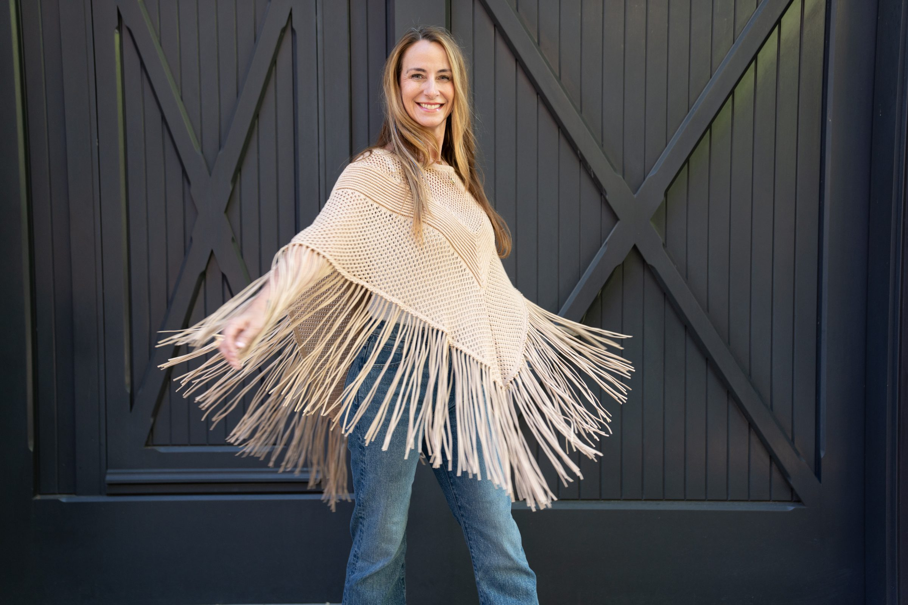

By invitation
Licensed psilocybin facilitation. Private, prepared, and held with more care than anything else I do.

Who's asking
I spent nearly three decades leading and advising executives before I ever trained for this. A three hundred fifty million dollar P&L at PepsiCo. Global strategy roles at Foot Locker and Adidas. Eight years as an Operating Partner inside a private equity firm with four hundred fifty billion dollars under management. Five board seats. A Henry Crown Fellowship at the Aspen Institute and a Presidential Leadership Scholar appointment.
None of that is why you are on this page. It is why I can sit across from the person reading it and already know what hesitation is costing them. I spent a career watching it cost capable people everything.
I did not come to this work because talk therapy failed me or because I needed a second act. I came because the leaders I have advised for thirty years are the ones who need a room like this the most, and the least likely to ever ask for one.
The range
Somebody asked me once to name the parts of myself that actually show up for work. This is the list I keep landing on. The range is the credential.
It is also why I can sit with a CEO at nine in the morning and someone taking the mask off at two in the afternoon, and not have to become a different person in between.

The work
Curiosity carried me across five continents and into rooms where the answer was supposed to come from analysis. Sometimes it did. More often, what actually moved was something the person already knew and had never let themselves say out loud.
This is a different room. The same belief lives underneath it. People are not broken. They are carrying something they have not had a safe place to set down.
Here is the real reason I got into this. I have seen it and lived it myself. How much healing happens the moment we finally take off the masks and get back to who we actually are underneath them.
Psilocybin services are legal here under the country's first state regulated model. This is not a prescription and not something borrowed from somewhere else. It is a supervised session with a licensed facilitator, at a licensed service center, with real preparation before it and real integration after.
The medicine is the short part. The container is the work.
What opens
Behind the veil
I am careful with that language, because it goes soft fast. So here is the unromantic version. For a few hours, the part of you that manages and edits and defends gets quiet. What is behind it was always there. You have never had the room to look at it without flinching.
There is a version of you that is less defended and more alive. Most people met her once and have been looking for the door ever since.
I scuba dive, and it is the closest thing I know. The ocean taught me to stop controlling, to let the current carry me, to be a kid again. Full of wonder and play. This work does the same thing, closer in.
Carl Jung called it the collective unconscious. A layer underneath your own story that is not only yours, carrying symbols and instincts every human seems to recognize without ever being taught them.
I did not study psychology to believe that. I studied people. In boardrooms, in dive tanks, and in that room. I have watched them meet something in themselves that was older than their own biography.
That is the real reason I do this. Not the license, though I earned that the hard way. What surfaces in that room does not belong only to the person lying there. It belongs to something we are all quietly plugged into, whether we ever say so out loud.
Some people find grief they filed away years ago. Some find a decision they made at nineteen and never revisited. Some find they are not angry, they are tired. Almost nobody finds something they did not already own.
The veil is not hiding a different you. It is hiding this one.
The arc
We meet before there is any medicine in the room. Health screening, medications, history. What you are actually here for, which is rarely the first thing anyone says. We build a safety and support plan and a plan for getting you home. Either of us can decide not to go forward, and that decision costs you nothing.
Administration happens at a licensed service center. Several hours. Eye shades, music, a blanket, a facilitator who stays. Mostly I am quiet. You do not drive yourself anywhere afterward.
I follow up within seventy two hours, and we meet again. The session is not the work. The work is what you do with it on an ordinary Tuesday, in your kitchen, in your marriage, in your company. That is where it lands or evaporates.
For groups
Everything above is built for one person. I also hold this for small groups who want to do it together instead of alone. Founders who have run something with the same two or three people for a decade. A leadership team that survived a merger, a layoff, or a brutal year and never once talked about what it actually cost them. Old friends who have already earned the kind of trust this work asks for.
The discipline is the same as the individual work, just built for a room instead of a chair. We prepare together and separately. The session is held at a private location, given only once everyone is confirmed, never published in advance. Integration continues after everyone goes home, because a group that only processes something together in the room and never again is a group that will quietly disagree about what happened.
Up to eight people. Never more. Past that, a room stops being a room and starts being an audience, and this work does not survive an audience.
Before any of that there is something you can do on your own tonight. The Pearl Dive is a thirty minute assessment I built for the leaders I coach. It is free and it asks nothing of you, not even an email.
For groups who want to take the integration further, I also lead small leadership retreats on Roatán, built around the same water that taught me how to stay calm for someone else. The medicine stays where it is licensed. The integration does not.
Hurt people hurt people. Healed people heal people.
The whole reason I trained
Fit

The evidence
This is the first place on earth where the work has run at scale in public view, which means there are finally real numbers instead of anecdotes. I read all of it. I would rather you did too.
Say it straight
I am not a therapist and this is not therapy. I am not a physician and this is not medical treatment. I do not diagnose, I do not treat, and I do not promise outcomes. Anyone who promises you an outcome is selling something.
Here is what I am. I trained at InnerTrek, the program founded by Tom Eckert, who architected Measure 109 and the first state regulated model of psychedelic care in the country. I am licensed by the Oregon Health Authority. I did the practicum hours. I sat in my own hard chair before I ever asked anyone to sit in theirs.
What you will get is careful screening, preparation that takes your questions seriously, a facilitator who stays, and confidentiality that is not negotiable.
And enough respect for you to say no when no is the right answer.
Begin
This goes nowhere but to me. I answer everything personally, usually within a few days. Nothing is scheduled from a form. We talk first.

Love can do that.